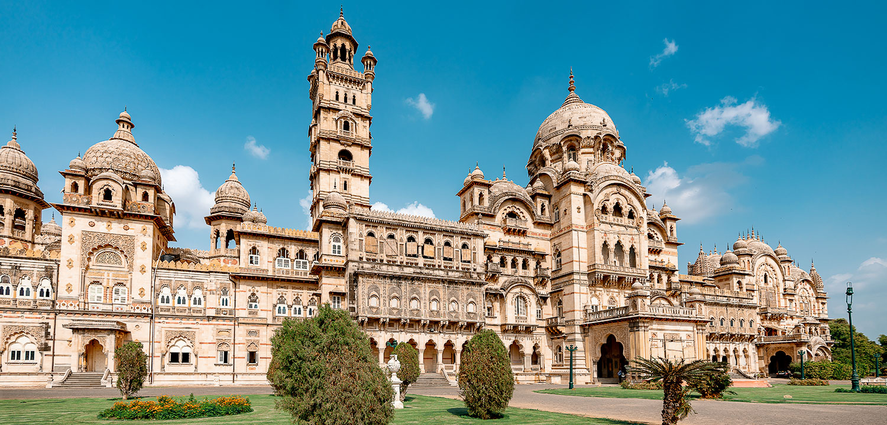
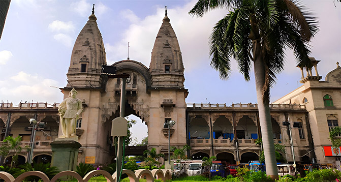
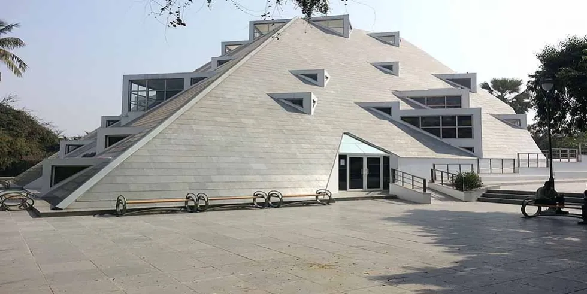
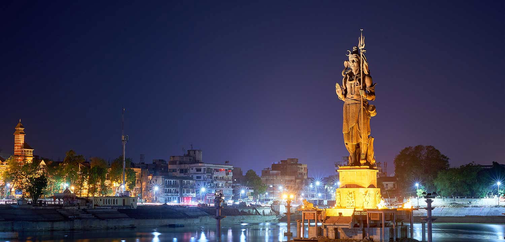
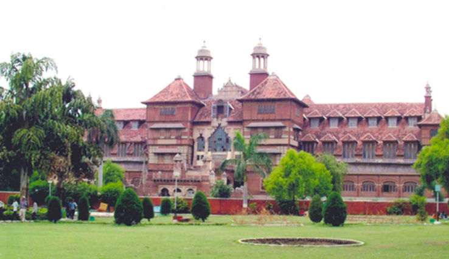

Laxmi Vilas Palace: A Royal Heritage
Laxmi Vilas Palace is a magnificent palace that showcases the grandeur of the Maratha dynasty.
Fun Fact:
~It is one of the largest private residences in the world, built in Indo-Saracenic style!
Things to Explore at Laxmi Vilas Palace:
-
The Durbar Hall:
Marvel at the opulent interiors adorned with intricate carvings and chandeliers.
-
The Museum:
Explore the museum that houses royal artifacts, paintings, and sculptures.
-
The Gardens:
Stroll through the beautifully landscaped gardens surrounding the palace.
-
The Maharaja’s Collection:
Discover the collection of weapons, armor, and vintage cars owned by the royal family.
-
The Sound and Light Show:
Experience the captivating sound and light show that narrates the history of the palace!
Why Visit Laxmi Vilas Palace?
!Because it’s a glimpse into the royal heritage and architectural brilliance of Vadodra!

Khanderao Market: A Vibrant Bazaar
Khanderao Market is a bustling market that offers a glimpse into the local culture and lifestyle.
Fun Fact:
~It is one of the oldest markets in Vadodra, known for its vibrant atmosphere!
Things to Explore at Khanderao Market:
-
The Local Handicrafts:
Shop for traditional handicrafts, textiles, and souvenirs.
-
The Street Food:
Indulge in delicious local street food and snacks.
-
The Colorful Stalls:
Explore the colorful stalls selling fresh produce, spices, and flowers.
-
The Cultural Vibe:
Experience the lively atmosphere filled with music and chatter.
-
The Historical Significance:
Learn about the history and significance of the market in Vadodra’s culture!
Why Visit Khanderao Market?
!Because it’s a perfect place to experience the local culture and shop for unique items!

Sayaji Garden: A Green Retreat
Sayaji Garden is a sprawling park that offers a peaceful escape amidst lush greenery and serene surroundings.
Fun Fact:
~It is one of the largest gardens in Vadodra, designed by the famous landscape architect Sir William Goldring!
Things to Explore at Sayaji Garden:
-
The Zoo:
Visit the zoo that houses various species of animals and birds.
-
The Museum:
Explore the museum that showcases artifacts and exhibits related to natural history.
-
The Boating Facility:
Enjoy boating on the serene lake within the garden.
-
The Walking Trails:
Take leisurely walks along the well-maintained walking trails amidst nature.
-
The Children’s Play Area:
Let your kids have fun at the dedicated play area with swings and slides!
Why Visit Sayaji Garden?
!Because it’s a perfect place for relaxation, recreation, and enjoying nature!

Sardar Patel Planetarium: A Cosmic Experience
Sardar Patel Planetarium is a fascinating place that offers a glimpse into the wonders of the universe.
Fun Fact:
~It is one of the largest planetariums in Gujarat, named after the great leader Sardar Vallabhbhai Patel!
Things to Explore at Sardar Patel Planetarium:
-
The Star Shows:
Experience mesmerizing star shows that take you on a journey through the cosmos.
-
The Exhibits:
Explore various exhibits related to astronomy, space science, and technology.
-
The Interactive Displays:
Engage with interactive displays that make learning about space fun!
-
The Educational Programs:
Participate in educational programs and workshops for all age groups.
-
The Telescope Viewing:
Enjoy telescope viewing sessions to observe celestial objects up close!
Why Visit Sardar Patel Planetarium?
!Because it’s a perfect place for astronomy enthusiasts and anyone curious about the universe!

Sur Sagar Lake: A Serene Escape
Sur Sagar Lake is a picturesque lake that offers a tranquil escape from the hustle and bustle of the city.
Fun Fact:
~It is one of the largest lakes in Vadodra, known for its scenic beauty and serene ambiance!
Things to Explore at Sur Sagar Lake:
-
The Boating Facility:
Enjoy boating on the calm waters of the lake.
-
The Walking Path:
Take leisurely walks along the well-maintained walking path around the lake.
-
The Sunset Views:
Experience breathtaking sunset views reflecting on the water!
-
The Local Flora and Fauna:
Observe various species of birds and plants around the lake.
-
The Cultural Events:
Participate in cultural events and festivals celebrated near the lake!
Why Visit Sur Sagar Lake?
!Because it’s a perfect place for relaxation, nature walks, and enjoying scenic views!

Baroda Museum: A Cultural Treasure
Baroda Museum is a cultural hub that showcases the rich heritage and history of Vadodra.
Fun Fact:
~It houses a vast collection of artifacts, artworks, and exhibits from various cultures!
Things to Explore at Baroda Museum:
-
The Art Gallery:
Admire the exquisite collection of paintings, sculptures, and artifacts.
-
The Natural History Section:
Explore exhibits related to natural history, including fossils and specimens.
-
The Archaeological Finds:
Discover archaeological finds that shed light on the region’s history.
-
The Cultural Exhibits:
Learn about the diverse cultures and traditions represented in the museum.
-
The Educational Programs:
Participate in educational programs and workshops organized by the museum!
Why Visit Baroda Museum?
!Because it’s a perfect place for history buffs and anyone interested in art and culture!

ISKCON Temple: A Spiritual Haven
ISKCON Temple is a serene temple dedicated to Lord Krishna, offering a peaceful environment for spiritual seekers.
Fun Fact:
~It is one of the largest ISKCON temples in Gujarat, known for its beautiful architecture!
Things to Explore at ISKCON Temple:
-
The Main Shrine:
Offer prayers and seek blessings at the beautifully adorned main shrine.
-
The Meditation Hall:
Engage in meditation and spiritual practices in the tranquil meditation hall.
-
The Cultural Programs:
Participate in various cultural and spiritual programs organized by the temple.
-
The Gift Shop:
Shop for spiritual books, artifacts, and souvenirs from the temple gift shop!
-
The Community Kitchen:
Enjoy delicious prasadam served at the community kitchen!
Why Visit ISKCON Temple?
!Because it’s a perfect place for spiritual rejuvenation and experiencing divine bliss!